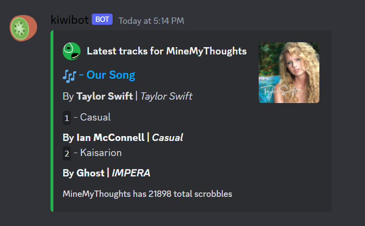
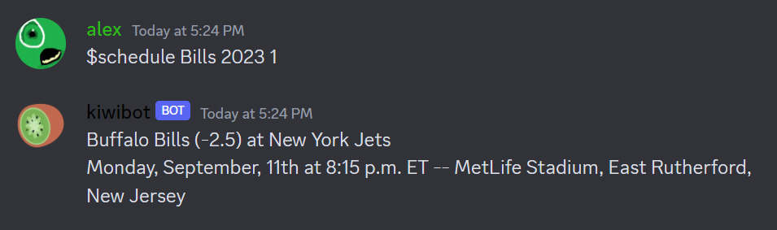

About Me
Hello! My name is Alex Tedesco, and I'm currently pursuing my degree in Computing & Information Technologies at
the Rochester Institute of Technology. I'm excited to say that I'm entering the third year of studies, and my
journey in the field of computing has been nothing short of amazing. I approach my work with the belief that my
skill set and dedication would significantly benefit anyone that I work and collaborate with.
Ever since I was introduced to my school's local computer club back in 2017, I discovered my passion for
computing and knew that this
industry was where I belonged. During my time in computer club, I immersed myself in learning the fundamentals
of computing. I absorbed
information like a sponge and I cannot thank my mentors Joe Claus and Donald Kress enough for their involvement
in my growth.
It was an incredible experience that solidified my passion for technology and its endless possibilities.
Since then, I have eagerly pursued opportunities to expand my skills and knowledge in the computing field. I
have engaged in various projects, both personal and academic, where I have applied my problem-solving abilities
and honed my technical expertise.
I am fascinated by the ever-evolving nature of technology and its potential to transform the world. The
innovative solutions and advancements in computing continue to inspire me, and I am eager to be part of this
dynamic industry.
As I continue my educational journey and work towards my degree, I am excited about the opportunities ahead. I
look forward to exploring new areas of computing, collaborating with like-minded individuals, and contributing
to the advancements that will shape our future.

Projects
Kiwibot
Kiwibot is a multi-purpose Discord bot that originated from the need to resolve a reoccurring
roommate debate over movie choices. As a group, myself and my three roommates have a movie night weekly and we
frequently
found ourselves in situations of not knowing what movie to decide on as a group. Eventually the development of
Kiwibot
began and now anytime we have this issue, kiwibot comes to the rescue!
Kiwibot has the ability to take any two movie titles and seamlessly merge them, offering the perfect movie
recommendation
that satisfies everyone's preferences. Beyond its movie-matching prowess, Kiwibot boasts additional features
that enhance our social experiences.
It integrates my other projects below allowing for more topic discussion amongst the group. This personal
project not only
streamlines decision-making but also showcases my passion for problem-solving and creative bot development.
LastFM API Calling
As someone deeply immersed in a vibrant circle of music enthusiasts, I recognized the profound role music plays in my life. It was this realization that drove me to embark on a journey to master the intricacies of the LastFM API, going through the many pages of documentation to do so. The result? A dynamic feature on kiwibot that not only reveals a users recently played tunes but also spotlights the current track being played. Beyond this, I used the API to extract intriguing music-listening statistics from the past month with the ability to set specific parameters. Taking the time to do this allowed my proficiency in API integration, data visualization, JSON and XML parsing, and overall web development.
PFRScraper
PFRScraper is a remarkable personal project that I developed using Python in conjunction with the powerful Beautiful Soup 4 package. This project
was designed to streamline the retrieval of comprehensive NFL-related information from Pro Football Reference. With PFRScraper, I can effortlessly
extract data such as NFL schedules, player statistics, and NFL rosters.
To enhance the user experience further, I integrated PFRScraper with Rotowire,
a leading sports news site, to provide real-time updates and the latest NFL news. The synergy between data scraping and news aggregation in this project
not only simplifies access to critical NFL data but also keeps users informed with up-to-the-minute insights into the world of professional football.
PFRScraper stands as a testament to my programming skills and my commitment to creating tools that simplify and enrich the way we engage with sports statistics
and news.


- 

- 
Work Experience:
Video Editor & Graphic Design Artist
As a seasoned video editor and graphic designer with six years of expertise in Adobe Premiere Pro and Adobe Photoshop,
I bring a wealth of creativity and technical prowess to every project I undertake. My professional journey has predominantly been
in the freelance realm, where I've consistently delivered top-tier video content and visually compelling assets to my valued clients.
My commitment to excellence is unwavering, and I take immense pride in the fact that I've never left a customer dissatisfied.
Throughout my career, I've had the privilege of collaborating and communicating with some of the world's most renowned entertainers. These collaborations
have not only honed my skills but have also deepened my appreciation for the art of storytelling through visual media. My journey as a video editor
and graphic designer is a testament to my passion for the craft and my dedication to exceeding expectations, ensuring every project is nothing short
of exceptional.
Daycare Worker
My role involved not only supervising and engaging with these young minds but also assisting them with their homework assignments, fostering their academic growth and development. Safety is paramount to me, and I have gained valuable experience in providing prompt first-aid assistance when needed, always prioritizing the well-being and comfort of every child under my supervision. With a passion for creating a positive and enriching experience for children, I take pride in being a dependable and caring presence in their lives, promoting their social, educational, and emotional development.

Dish Washer
Less than a mile from my home lies the renowned Moore's Maple Shack, a restaurant steeped in rich family history.
Despite not being an immediate family member, I have been closely associated with the Moore family throughout my entire life,
and they graciously welcomed me into their tight-knit team. The warm and inclusive atmosphere allowed me to play a significant
role in maintaining the smooth operation of this beloved restaurant while preserving its cherished traditions.
This experience refined my work ethic, enhanced my attention to detail, and deepened my appreciation for teamwork and the preservation of time-honored
customs within this cherished family establishment. During my tenure as a dishwasher, I took on the crucial responsibility of
meticulously cleaning and drying heavily soiled dishes, ensuring the highest standards of cleanliness and efficiency.